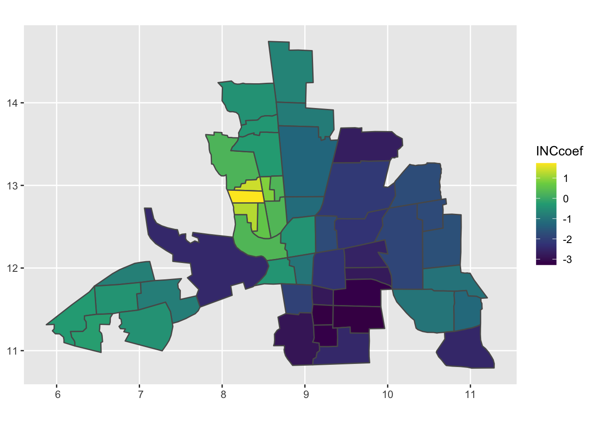

Tuesday, October 3, 2022
Today
- Introduction to Bayesian data analysis
Bayesian methods are used in a variety of applications from predicting elections to directing self-driving cars.
Bayesian methods are important for applications where uncertainty needs to be quantified, and where there are many sources of information available about the subject of interest.
Bayesian methods are not routinely taught in school. While there is an increasing number of excellent resources online, if you google “Bayesian” you might get lots of links to philosophical discussions about subjective vs objective methods, discourses on the differences and relative merits of frequentist vs Bayesian methods, discussions on \(p\)-values vs subjective probabilities, etc.
With this introduction you will (1) be able to identify the important components of a Bayesian data analysis, and (2) be able to interpret and explain the components.
Distributions
The first thing you need to appreciate is a distribution, and be familiar with some of the most common types. A distribution is like a Lego brick. It can be stacked together with other Lego bricks to create a variety of models.
A distribution describes which values of a variable are common and which are less so. For example, averages taken from samples follow the bell-shaped normal distribution. Two-thirds of all averages are within one standard deviations of the overall mean. Averages greater than three standard deviations from the mean are rare.
Normal distribution
Formally, the normal distribution is defined by the following (probability) density function (pdf), where \(\mu\) is the population mean and \(\sigma^2\) is the variance. \[ f(y) = \frac{1}{\sigma \sqrt{2\pi}} e^{\frac{-(y-\mu)^2}{2\sigma^2}} \]
For any value \(y\) the equation tells us what the density value \(f(y)\) will be given \(\mu\) and \(\sigma\). \(f(y)\) is largest when \(y\) is close to \(\mu\). Note: \(e\) is the base of the natural logarithm (2.71828…).
Fortunately we do not need to know this formula or any other distribution formula. We just need to understand its shape.
If a variable \(Y\) is described by a normal distribution, then we write: \[ Y \sim N(\mu, \sigma^2) \]
In particular, the normal distribution with \(\mu\) = 0 and \(\sigma\) = 1 is called the standard normal distribution, and is denoted as \(N(0,1)\). It’s shape is graphed as follows.
x <- seq(-5, 5, length = 101)
y <- dnorm(x, mean = 0, sd = 1)
df <- data.frame(x, y)
library(ggplot2)
( p <- ggplot(df, mapping = aes(x = x, y = y)) +
geom_line() )
Assume that test scores of an exam fit normal distributions. And that the mean test score is 72, and the standard deviation is 15.2. What is our best estimate for the percentage of all students that will score at least 84 on the exam?
Solution: You use the pnorm() function (density of the normal distribution) with argument mean equal to 72 and the argument standard deviation (sd) 15.2. Since you are looking for the percentage of students scoring AT LEAST 84, you are interested in the upper (right) tail of the normal distribution.
pnorm(q = 84, mean = 72, sd = 15.2,
lower.tail = FALSE)## [1] 0.2149176The percentage of all students scoring at least 84 on the exam will be 21.5%.
Effectively, the information contained in the sample of data is reduced to a distribution (model) with only two parameters.
If the mean or standard deviation are changed, the curve changes but it remains a normal distribution (shape remains the same).
y <- dnorm(x, mean = 1, sd = 1.5)
df2 <- data.frame(x, y)
p + geom_line(data = df2,
mapping = aes(x = x, y = y), color = "blue")
The two curves are members of a distributional family all having the same shape.
Uniform distribution
The uniform distribution is one in which all intervals of the same width are equally likely. It has two parameters \(a\), \(b\) where \(a\) < \(b\) defining the end points.
runif(n = 10, min = 1, max = 3)## [1] 2.989154 2.986390 1.195271 2.798689 2.689438 1.016781 2.782883 2.937124
## [9] 1.967613 1.197635The shape is described as flat.
x <- seq(1, 3, length = 101)
y <- dunif(x, min = 1, max = 3)
df <- data.frame(x, y)
ggplot(data = df, mapping = aes(x = x, y = y)) +
geom_line() +
scale_y_continuous(limits = c(0, 1))
The uniform distribution implies that all values are equally likely to occur. This contrasts with the normal distribution where values near the mean are more likely than those farther from it.
The uniform distribution used in the Bayesian context describes the situation in which you are maximally ‘non-committed.’ In other words, there is no reason to prefer one value over another between the minimum and the maximum.
Think of voters who are not committed to either candidate A or B. If these are the only two choices then maximally non-committed implies that they are just as likely to vote for A as they are to vote for B. Now imagine an infinite number of candidates.
A parametric model, like the uniform or Gaussian, is a family of distributions described using only a few parameters. Bayesian models are built from parametric models.
Bayesian models are ‘generative.’ If you know the parameters then you can generate data: Parameters (\(\mu\), \(\theta\), \(\sigma\)) –> generative model –> data (5, 3, 4, 0, 1, …): Going from parameters to data is called Monte Carlo simulation.
Example: If you assume that the rate of hurricanes in the United States is 1.7 hurricanes/year (\(\lambda\)) and you assume our generative model is the Poisson distribution then you generate data using
rpois(n = 100, lambda = 1.7)## [1] 2 4 1 0 2 0 1 1 4 2 4 3 1 0 1 2 0 0 2 1 2 3 4 0 1 2 0 0 1 2 2 0 1 1 4 0 2
## [38] 2 1 1 0 3 1 4 2 1 3 1 1 1 3 0 1 2 6 3 3 0 0 4 3 1 1 0 2 4 0 1 2 0 1 2 2 2
## [75] 1 3 2 0 2 4 2 2 2 2 2 0 2 0 2 2 3 1 0 2 3 2 2 2 2 3Alternatively if you assume the rate of hurricanes is described by a gamma distribution with shape parameter = 3.5 and scale parameter = .5 then you generate data using
lambda <- rgamma(n = 100, shape = 3.5, scale = .5)
rpois(n = 100, lambda = lambda)## [1] 0 1 0 3 3 3 0 1 2 0 2 1 0 0 2 1 2 2 3 1 0 2 1 1 0 4 0 3 4 0 0 1 0 3 2 3 0
## [38] 5 2 0 3 3 1 0 0 1 0 2 0 1 1 1 2 0 2 4 3 0 0 1 4 0 5 1 0 3 4 4 1 2 1 2 2 1
## [75] 0 0 0 0 1 6 2 1 0 2 1 0 1 2 0 0 0 3 2 2 7 3 2 1 0 0In this case you first generate a bunch of \(\lambda\)s from a gamma distribution and then for each \(\lambda\) you generate a count.
If you know the data then you can estimate the parameters: data (5, 3, 4, 0, 1, …) –> generative model –> Parameters (\(\mu\), \(\theta\), \(\sigma\)): Going from data to parameters is called Bayesian data analysis.
How many blue marbles?
Consider an example from Statistical Rethinking (McElreth 2016). You have a bag containing four marbles. Each marble is either blue (B) or white (W). You don’t know how many blue marbles are in the bag.
It could be either 0, 1, 2, 3, or 4. Only five possibilities. It can’t be 5, 6, or 3.2.
Your goal is to figure out the likely number of blue marbles given the evidence (data). What is the likely number before you have further evidence?
You gather evidence (collect data) by drawing a sequence of three marbles. The marbles are pulled from the bag, one at a time, then returned to the bag, and the bag is shaken before drawing another.
Say you draw the sequence [B W B]. How many ways are their to produce this draw?
If you conjecture that the bag contains 0 blue marbles, then how many ways could you have gotten [B W B]? Simple: zero.
If you conjecture that the bag contains 1 blue and 3 white marbles (B W W W) then how many ways could we have gotten [B W B]? Starting from left to right in our sequence [B W B] you see there is only 1 way to get a blue, 3 ways to get a white, and again only 1 way to get a blue. You multiply these ways together 1 x 3 x 1 = 3 to get the total number of ways to get [B W B] GIVEN that the bag contains one blue and four white marbles (B W W W).
If you conjecture that the bag contains 2 blue and 2 white marbles (B B W W) then how many ways could you have gotten [B W B]? Starting from left to right in our sequence [B W B] you see there is 2 ways to get a blue, 2 ways to get a white, and again 2 ways to get a blue. You multiply these ways together 2 x 2 x 2 = 8 to get the total number of ways to get [B W B] GIVEN that the bag contains two blue and two white marbles (B B W W).
Here is the full table of ways to produce that draw given each possible bag composition.
| conjecture | ways to produce [B W B] |
|---|---|
| (W W W W) | 0 x 4 x 0 = 0 |
| (B W W W) | 1 x 3 x 1 = 3 |
| (B B W W) | 2 x 2 x 2 = 8 |
| (B B B W) | 3 x 1 x 3 = 9 |
| (B B B B) | 4 x 0 x 4 = 0 |
So what is the most likely number of blue marbles now?
What happens when you draw another marble? You update the counts. How? You multiply the prior counts by the new count. The old counts act as your prior counts.
Here is an example after drawing an additional blue marble [B].
| conjecture | ways to produce [B] | previous counts | new count |
|---|---|---|---|
| (W W W W) | 0 | 0 | 0 x 0 = 0 |
| (B W W W) | 1 | 3 | 1 x 3 = 3 |
| (B B W W) | 2 | 8 | 2 x 8 = 16 |
| (B B B W) | 3 | 9 | 3 x 9 = 27 |
| (B B B B) | 4 | 0 | 0 x 4 = 0 |
Now, out of the five possibilities concerning the frequency of blue and white marbles in the bag, the conjecture of three blues and one white has pulled further into the lead.
Logically, what you have done is expressed as: Plausibility of (B W W W) after seeing [B] is proportional to the ways (B W W W) can produce [B] X prior plausibility of (B W W W).
But these are just counts and plausibilities; you want probabilities. To make this change first let’s define \(p\) as proportion of blue marbles in the bag and \(D_{new}\) as the data.
You now have: Plausibility of \(p\) after \(D_{new}\) is proportional to the ways \(p\) can produce \(D_{new}\) X prior plausibility of \(p\).
You standardize the plausibility so that the sum of the plausibilities over all conjectures equals one. To standardize, you add all the ways to produce [B W B], one for each \(p\), then divide each way by this sum.
For example there is three ways to produce [B W B] if the bag contains (B W W W), eights ways to produce [B W B] if the bag contains (B B W W) and nine ways to produce [B W B] if the bag contains (B B B W) 3 + 8 + 9 = 20. 3/20 = .15, 8/20 = .4, and 9/20 = .45.
| possible combinations | \(p\) | ways to produce data | probability |
|---|---|---|---|
| (W W W W) | 0 | 0 | 0 |
| (B W W W) | .25 | 3 | .15 |
| (B B W W) | .5 | 8 | .40 |
| (B B B W) | .75 | 9 | .45 |
| (B B B B) | 1 | 0 | 0 |
This process is equivalent to: Plausibility of \(p\) after new data \(D_{new}\) = (ways \(p\) can produce \(D_{new}\) X prior plausibility \(p\)) / sum of plausibilities.
All these calculations correspond to quantities in applied probability theory.
- The conjectured proportion of blue marbles, \(p\), is called a parameter.
- The relative number of ways that \(p\) can produce the data is called the likelihood.
- The prior plausibility of a specific \(p\) is called the prior probability.
- The updated plausibility of any specific \(p\) is called the posterior probability.
What percentage of the globe is covered by water?
Imagine a globe of the world. You want to know how much of the globe is water. Your strategy is to throw the globe up, catch it, and note the surface (water or land) under the right index finger. Suppose you do this globe tossing 9 times.
d <- data.frame(toss = c("w", "l", "w", "w", "w", "l", "w", "l", "w"))On the first toss your finger touches water, on the next toss it touches land, etc.
You then rephrase in terms of trials and the cumulative counts of water which you denote as the number of success (n_success).
( d <- d |>
dplyr::mutate(n_trials = 1:9,
n_success = cumsum(toss == "w")) )## toss n_trials n_success
## 1 w 1 1
## 2 l 2 1
## 3 w 3 2
## 4 w 4 3
## 5 w 5 4
## 6 l 6 4
## 7 w 7 5
## 8 l 8 5
## 9 w 9 6To get the logic machine started you need to make assumptions. These assumptions constitute the model. An ideal loop for designing a Bayesian model has three steps
- Data story
- Describe aspects of the underlying reality as well as the sampling process.
- Then translate into a formal probability model.
Framework for interpretation. Helps with finding additional questions that must be answered because hypotheses are often vague.
- Update
- Bayesian models begin with a set of plausibilities assigned to each possibility called the prior.
- Update those plausibilities based on the data to give posterior plausibility.
- Evaluate
- Certainty is no guarantee that the model is good or accurate.
- Critique the model.
- Check model’s adequacy for some purpose, or in light of stuff we don’t know.
How did the data come to be? Describe aspects of the underlying reality as well as the sampling process, sufficient enough for specifying an algorithm to simulate new data. Write out the data story for this activity.
A Bayesian model begins with one set of plausibilities assigned to each possible result, the prior plausibilities. These values are then updated in light of data to produce posterior plausibilities. This process is called Bayesian updating.
Here is the code for our proportion of water example.
sequence_length <- 50 # how many points to calculate probability for
d |>
tidyr::expand(n_trials,
p_water = seq(from = 0, to = 1, length.out = sequence_length)) |>
dplyr::left_join(d, by = "n_trials") |>
dplyr::group_by(p_water) |>
# lag is the *previous* value
dplyr::mutate(lagged_n_success = dplyr::lag(n_success, k = 1),
lagged_n_trials = dplyr::lag(n_trials, k = 1)) |>
# if first time, flat prior.
# otherwise use previous posterior as new prior.
dplyr::ungroup() |>
dplyr::mutate(prior = ifelse(n_trials == 1,
.5,
dbinom(x = lagged_n_success,
size = lagged_n_trials,
prob = p_water)),
strip = stringr::str_c("n = ", n_trials), # which draw is it?
likelihood = dbinom(x = n_success,
size = n_trials,
prob = p_water)) |> # calculate likelihood for current draw
# normalize the prior and the likelihood, making them probabilities
dplyr::group_by(n_trials) |>
dplyr::mutate(prior = prior / sum(prior),
likelihood = likelihood / sum(likelihood)) |>
ggplot(mapping = aes(x = p_water)) +
geom_line(mapping = aes(y = prior), linetype = 2) +
geom_line(mapping = aes(y = likelihood)) +
scale_x_continuous("proportion water", breaks = c(0, .5, 1)) +
scale_y_continuous("probability", breaks = NULL) +
facet_wrap(~strip, scales = "free_y") +
theme_minimal()
Look at the upper left panel. The dashed horizontal line is your prior probability before gathering any data. It codifies your lack of knowledge about the proportion of water by stating that it is equally likely to be any proportion (value between 0 and 1).
The solid line indicates the probabilities after you observe ‘water’ (“w”) on our first trial (n = 1). The highest probability is that the entire globe is water and the lowest probability (0) is that there is no water so the line slopes from lower left to upper right.
The next panel (n = 2) shows what happens to this diagonal line (now shown as dashed because it is now the prior) after you observe ‘land’ (“l”) on your second trial. The highest probability is now .5 with lowest probabilities (0) for both the case of no water and no land. In the next panel (n = 3) you see that the probability distribution shifts again after observing ‘water’ on your third trial.
As more and more data are collected the difference between the prior (previous) and posterior (current) diminishes. Note that these Bayesian estimates are valid and interpretable at any sample size. This is in contrast to interpretations around a minimum number of samples in non-Bayesian contexts. In non-Bayesian contexts, statistical inference is justified by behavior at large samples sizes (this is called ‘asymptotic behavior’).
You get answers by counting things rather than by solving equations.
How many fish are in the lake?
Source material: http://sumsar.net/
A common problem in wildlife management. Estimate species abundance. Problem: you can’t count them all. You can catch some, mark them, release them, then catch some more and so on. Here are the steps:
- Catch some fish
- Mark and return them
- At a later point, catch some fish again
- Count how many new fish caught that are marked.
For example: 20 fish are caught and marked. Then five out of the 20 fish that were caught the second time were ones that were previously marked. How many fish are in the lake?
Parameter = Number of Fish in the Lake (unknown) Generative Model: 1. Mark 20 fish, Sample 20 fish and count the number that are marked. Data: 5 marked fish out of 20 sampled.
Two types of uncertainty: Parameter uncertainty, Model uncertainty (e.g., why only 20?, how long before attempting recapture?)
To answer the question of how many fish in the lake:
- Draw a random sample from the prior distribution on the parameter.
- Plug in each draw into the generative model to get a vector of ‘fake’ data. For example: If the number of fish in the lake is 63 you might get four marked fish on your recapture. If the number of fish is 30, you might get 13, etc.
- Keep only those parameter values that generated the data that was actually observed (5 out of the 20 sampled).
Draw a large (M = 100000) sample from the prior distribution (discrete uniform) on the parameter representing the number of fish in the lake (priorNF). Here you use the sample() function on a vector of counts between 21 and 250.
M <- 100000
priorNF <- sample(21:250, size = M, replace = TRUE)
head(priorNF)## [1] 141 111 24 151 123 163The result is a vector of length M containing counts with values between 21 and 250. What is the distribution of these values?
head(table(priorNF))## priorNF
## 21 22 23 24 25 26
## 431 440 396 448 485 451tail(table(priorNF))## priorNF
## 245 246 247 248 249 250
## 416 404 427 419 420 444Plot the distribution of parameter values.
ggplot(data = as.data.frame(priorNF),
mapping = aes(priorNF)) +
geom_histogram(binwidth = 10, boundary = 20,
color = "white", fill = "salmon") +
xlab("Number of Fish in the Lake") +
ggtitle(label = "Prior distribution on the number of fish in the lake") +
theme_minimal()
Next: define the generative model.
In summary, we considered a toy problem where you want to know how many blue marbles are in a bag. You start with a prior distribution on this number representing all possible hypotheses on the number of blue marbles in the bag. You then collect some data and determined the likelihood of these data under each of the hypotheses. Finally you keep only those hypotheses that produce the data that you collected. This gives you a posterior distribution.
We then considered a problem where you want to know the ratio of water to land on a globe. A solution involves sampling locations at random by successively throwing and catching the globe and noting where your index finger lands, either touching water or touching land. Each sample improves your estimate of the ratio.
{kind=link}
Solutions to these problems illustrate the knowledge building process. You obtain posterior knowledge by balancing information from your data and from your prior knowledge. As more data comes in you continue to refine this knowledge as the influence of our original prior fades into the background. In light of more and more data, two analysts that start out with opposing knowledge will converge on the same posterior knowledge.
With Bayesian data analysis you assess the uncertainty of the hypothesis in light of the observed data. In contrast with classical (frequentist) data analysis (last week) you assess the uncertainty of the observed data in light of an assumed hypothesis (null).